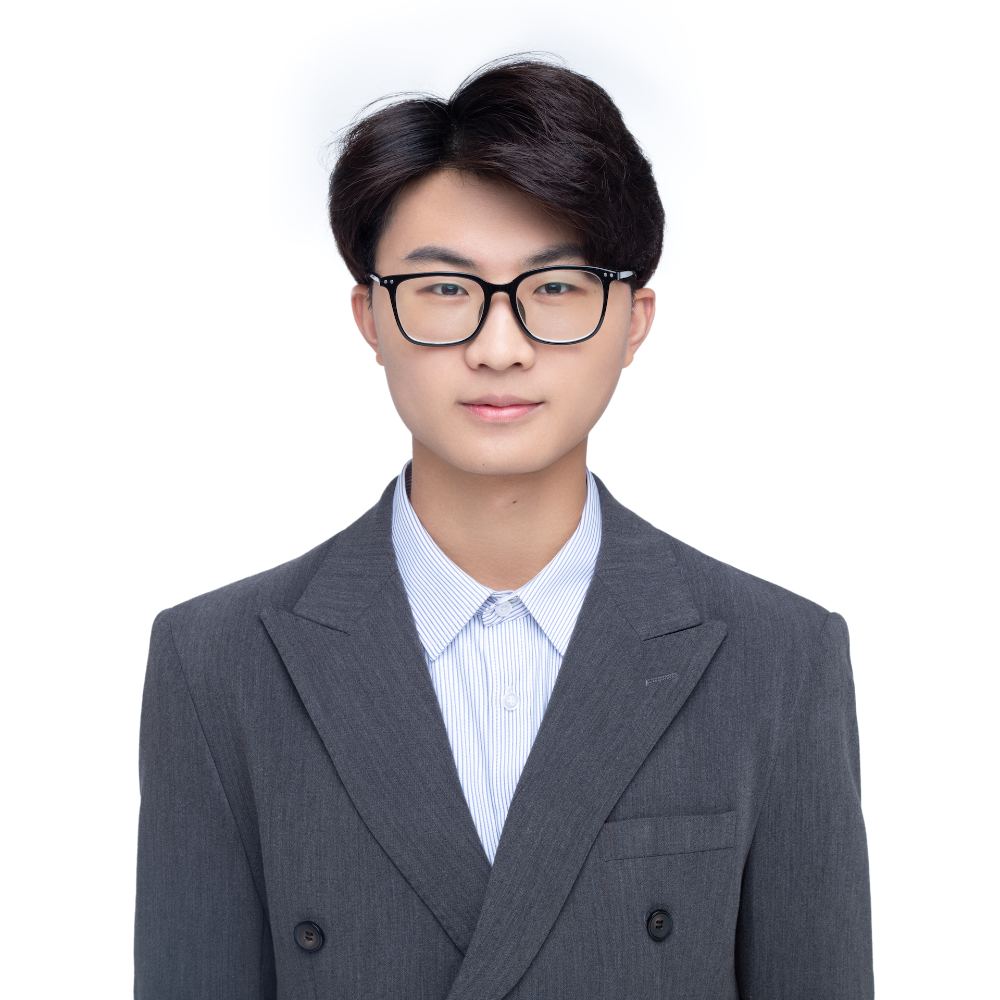

Master Student
Southern University of Science and Technology (SUSTech)
Department of Mechanics and Aerospace Engineering

I am currently a Master of Science student (09/2023 - Present) in Mechanics at the Southern University of Science and Technology (SUSTech), advised by Prof. Ju Liu.
Previously, I obtained my Bachelor of Science degree in Theoretical and Applied Mechanics from SUSTech (09/2019 - 06/2023).